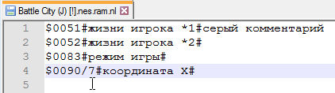

Комментарии хранятся в одноименных файлах с расширением .nl, которые обновляются сразу после добавления/редактированя/удаления комментария.
При добавлении/редактировании комментария имя файла отображается в окне Symbolic Debug Naming.
Комментарии на адреса NES Memory в диапазоне $0000-$7FFF записываются в файл .ram.nl. Комментарии на адреса $8000-$FFFF записываются в файл с учетом номера банка, в котором был добавлен комментарий, например в файл .0.nl.
Номер банка указан в Debugger'е слева от адреса инструкции. Также можно открыть комментарий в Debugger'е, а в появившемся окне посмотреть путь к файлу. Или навести курсор на инструкцию и посмотреть информацию внизу окна.
Эти файлы можно пересылать своим знакомым, которые могут помочь тебе с игрой, чтобы у тех также появился список необходимых комментариев. Чтобы Debugger мог увидеть эти файлы, нужно их правильно переименовать под ROM.
Редактирование .nl файлов
При наличии символов кириллицы в файле с комментариями, желательно делать бэкап файла перед его ручном редактировании, и в особенности при изменении кодировки. По неопытности можно запросто потерять все свои русские комментарии в данном файле. Правильная кодировка для отображения латинских символов и символов кириллицы в Debugger'е и текстовом редакторе - ANSI.
Редактировать файлы с комментриями обычно нужно тогда, когда ты переписываешь закомментированный код, поскольку появятся новые инструкции по новым адресам, и старые комментарии либо не будут видны в Debugger'е, либо не будут соответствовать новому коду.
Перед переписыванием кода следует предварительно сделать его скриншот вместе со всеми комментариями (или несколько скриншотов, если код длиннее одной страницы). Затем переписать свой код, и когда тот будет полностью готов, отредактировать адреса старых комментариев под новые адреса, сверяясь со скриншотом, и при необходимости удалить лишние комментарии или добавить еще больше.
Чтобы легко ориентироваться в файле, желательно отсортировать список комментариев по алфавиту при помощи плагина TextFX для Notepad++, или другим известным тебе способом.
Формат комментариев
Каждый комментарий на адрес пишется с новой строчки. Сначала идет символ "$" и 16-битный адрес. Затем символ "#", где записывается текст для Name. В конце еще один символ "#", здесь можно дописать текст для Comment.

Если в файле удалить комментарий Name и оставить только Comment, такой комментарий все равно будет отображаться в Debugger'е. Однако при попытке отредактировать и сохранить комментарий через Debugger, он будет удален из-за отсутствия символов в Name.
В конце файла обязательно должна быть пустая строка. Без нее комментарий с вышестоящей строки не будет отображаться в Debugger'е.
Повторная загрузка файла
После изменения файла нужно сохранить его, а затем в Debugger'е нажать кнопу Reload Symbols, чтобы тот повторно прочитал .nl файлы. Если в файле будут замечены ошибки, Debugger сообщит об этом после нажатия кнопки.
Без нажатия этой кнопки Debugger не будет синхронизирован с твоими новыми изменениями в файле. Это приведет к тому, что после добавления/редактирования комментариев через Debugger твои изменения в файле в итоге не сохранятся, поскольку Debugger не будет знать об этих изменениях и перезапишет файл своей текущей информацией.
Альтернатива нажатию кнопки - закрыть эмулятор, а затем повторно открыть ROM.
Скрытые возможности файла
Массив адресов
Не рекомендуется к использованию в новых версиях эмулятора, так как квадратные скобки конфликтуют с синтаксисом окна Debugger.
Массив удобен для комментирования сразу нескольких соседних адресов. Может применяться для однотипных адресов различных объектов, вместо добавления комментария на каждый отдельный адрес. Для создания массива с одинаковыми именами нужно после начального адреса добавить символ "/" и записать размер массива Hex-числом.

В данном случае начало массива - $0090, а размер массива - 8 байт (#$00-#$07). Вот как будут выглядеть такие комментарии по адресам $0090-$0097.

А если добавить в конце текст для поля Comment, этот серый комментарий будет отображаться сразу у всех адресов массива.
Даже если некий адрес из массива уже имеет комментарий в .nl файле, по этому адресу все равно будет отображаться имя из массива.
Когда Debugger в следующий раз обновит .nl файл, все адреса из массива будут разбиты на отдельные строки комментариев.
Дополнительные серые строки
На данный момент функция работает криво в новой версии эмулятора. Отправил багрепорт разработчику.
Можно добавлять больше строчных серых комментариев, которые будут отображаться при показе этого адреса в Debugger'е. Для этого после основной строки комментария адреса нужно добавить новую строку, ввести символ "\" и дописать еще один комментарий.
Благодаря этому будет отображаться больше комментариев.

Неудобство заключается в том, что если ты сортируешь свои комментарии на адреса в текстовом файле по алфавиту, эти дополнительные комментарии после сортировки вероятно окажутся привязанными к самому последнему адресу в файле, а не к тем, к которым были приставлены изначально.